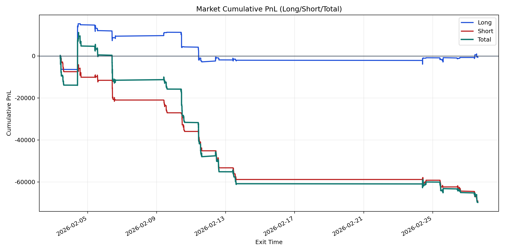
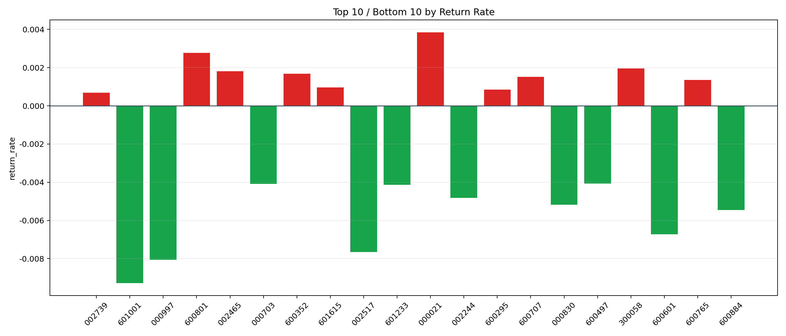

| repo_root | /home/haoranyou/data/output/dynamic_AUM_TAKER_index500 |
|---|---|
| period_months | 1 |
| period_label | 2026-02-03_to_2026-02-27 |
| start_time | 2026-02-03 09:50:52 |
| end_time | 2026-02-27 14:45:27 |
| n_trades | 3777 |
| n_symbols | 77 |
| total_pnl | -69780.64270000045 |
| long_total_pnl | -656.3818999995432 |
| short_total_pnl | -69124.26080000089 |
| total_entry_notional | 67764293.0 |
| long_entry_notional | 20924901.000000004 |
| short_entry_notional | 46839392.0 |
| total_return_rate | -0.0010297553417992636 |
| long_return_rate | -3.1368459043105775e-05 |
| short_return_rate | -0.0014757719485342783 |
| top_symbols_by_return | ["000021", "600801", "300058", "002465", "600352", "600707", "600765", "601615", "600295", "002739"] |
| bottom_symbols_by_return | ["601001", "000997", "002517", "600601", "600884", "000830", "002244", "601233", "000703", "600497"] |

